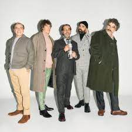
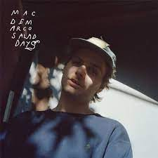
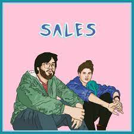

"El cuarteto de nos"
Discription: El Cuarteto de Nos is a Uruguayan rock band known for their eclectic musical style and thought-provoking lyrics. Formed in Montevideo in the early 1980s, the band has undergone various lineup changes over the years but has consistently maintained a unique sound characterized by a fusion of rock, pop, funk, and other genres. Led by the charismatic vocalist and lyricist Roberto Musso, El Cuarteto de Nos often explores themes ranging from social commentary to existential introspection in their songs, earning them a devoted following both in Uruguay and internationally. With their innovative approach to music and thought-provoking lyrical content, El Cuarteto de Nos continues to push boundaries and captivate audiences around the world.

"Mac DeMarco"
Discription: Mac DeMarco is a Canadian singer-songwriter, multi-instrumentalist, and producer known for his laid-back, indie rock sound and quirky persona. Born in British Columbia, DeMarco gained prominence with his breakthrough album "2" in 2012, followed by critically acclaimed releases such as "Salad Days" (2014) and "This Old Dog" (2017). His music is characterized by jangly guitar riffs, catchy melodies, and lo-fi production, drawing inspiration from genres like indie rock, psychedelic rock, and folk. DeMarco's charm and humor, both on and off stage, have also contributed to his popularity, making him a beloved figure in the indie music scene.

"Sales"
Discription: "Sales" is also the name of an American indie pop duo consisting of Lauren Morgan and Jordan Shih. Formed in 2013 in Orlando, Florida, Sales gained attention for their dreamy, lo-fi sound characterized by minimalist arrangements, catchy melodies, and Morgan's ethereal vocals. Their music often features a blend of indie pop, electronic, and folk influences. Sales has released several EPs and albums, including their self-titled debut album "SALES" in 2016 and "Forever & Ever" in 2021. The duo has garnered a dedicated fanbase and critical acclaim for their unique musical style and intimate songwriting.